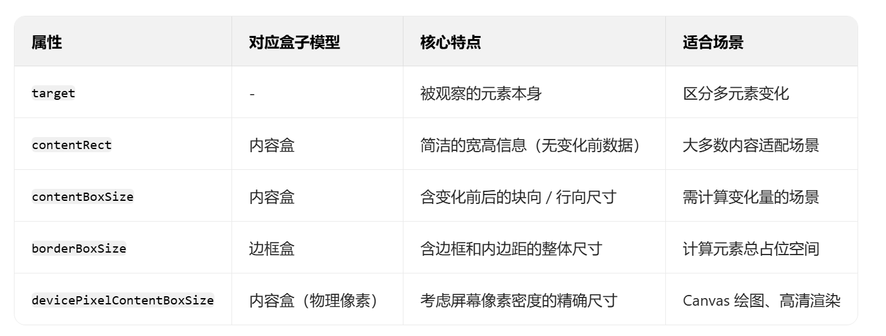

observe()的第二个参数 options 对象用于控制以什么盒模型来计算目标节点的尺寸 。这个对象的box属性可以是以下 3 个值
observer.observe(document.body , {box: 'device-pixel-content-box'})
其实就是告诉盒模型 , 要观察哪里Resize0bserver在渲染过程中处理缩放事件: 所有操作在布局之后、绘制之前发生。这很好理解浏览器会等到可以度量元素尺寸的时候并确定是否发生缩放， 但要在执行绘制之前运行回调,以防回调进一步修改布局。 浏览器先通过 “布局” 算出元素的最新尺寸 → 对比旧尺寸判断是否发生变化（缩放、内容修改等都可能导致变化）→ 在 “绘制” 前执行 ResizeObserver 回调（方便回调修改布局，避免重复绘制）→ 最后用最终布局结果去绘制。
let obServer = new ResizeObserver(() => console.log('<body> was resized'))
obServer.observe(document.body)
// ResizeObserver 总会在 observe() 执行后调用一次回调
// <body> was resized
setTimeout(() => {
document.body.style.width = '100px'
console.log('Changed body width')
}, 1000);
// (1000 毫秒之后)
// Changed body width
// was resized
注意，回调中的console.log()是后执行的，说明回调在 style.width 被赋予新值时不是同步执行的
现实当中，缩放事件通常不会只发生一次。比如，用户会持续拖动并缩放窗口 , 动画会不断修改元素大小 , 或逐步地渲染内容 , 这些都会导致连续不断地触发缩放事件 。 回调函数需要考虑到这一点。
每个回调都会接收两个参数: 第一个是表示每个缩放事件的ReaizeObserverEntry对象的数组 , 第二个是观察者实例。这样回调可以根据缩放尺寸来修改页面 , 也可以通过观察者引用来停止观察某个 元素。 简单理解就是: 第一个参数是 一个数组存储着变化了的参数 : 第二个是ResizeObserver本身
ReaizeObserverEntry 对象是一个包含以下只读属性的字典。

上面这些*-Boxsize属性是包含两个属性的对象的数组 , 其中一个属性是blocksize，即块维度元素盒子的长度 , 另一个属性是inlinesize，即行内维度元素盒子的长度。 之所以是数组，主要是因游多栏布局中元素可能有多个片段，但一般来说数组长度都是1
1. inlineSize ≈ “当前排版方向下的行内尺寸”（横排是宽度，竖排是高度）；
2. blockSize ≈ “当前排版方向下的块尺寸”（横排是高度，竖排是宽度）；
3. 数组形式是为了多栏布局，平时直接用 *BoxSize[0] 取第一个元素即可。
下面的例子展示了一个示例Resize0bserverEntry 对象的数组:
let observer = new ResizeObserver((entries, observer) => {
console.log(entries)
})
observer.observe(document.body)
// 观察到一次缩放后的输出:
[
{
borderBoxSize: [
{
inlineSize: 1628,
blockSize: 2471.09375
}
],
contentBoxSize: [
{
inlineSize: 1628,
blockSize: 2516.4375
}
],
devicePixelContentBoxSize: [
{
inlineSize: 2442,
blockSize: 3775
}
],
contentRect: {
x: 0,
y: 0,
width: 1628,
height: 2516.4375,
top: 0,
},
target: body
}
]
Resize Observer API 没有使用记录队列，因为回调触发的间隔是严格定义的。如果浏览器检测到缩放在布局渲染之后发生，它会触发一次回调并传入一个捕获当前目标缩放后状态的ResizeObserverEntr下一次触发事件的时机在后续的布局阶段， 于是就不会出现针对同一事件触发两次缩放事件的情况。因此不需要使用队列。
Resize Observer 会自动合并 “同一布局阶段内的所有尺寸变化”，只触发一次回调，所以不需要用 “队列” 来存储多次变化记录。还有不要搞混了前面的记录列表 , 记录的是变化的元素 , 以及前后尺寸的变化的数据